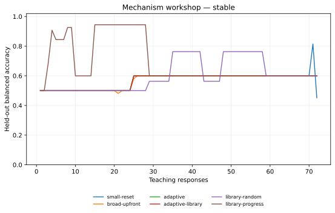
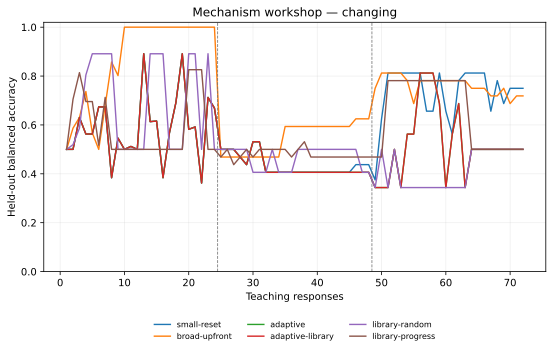
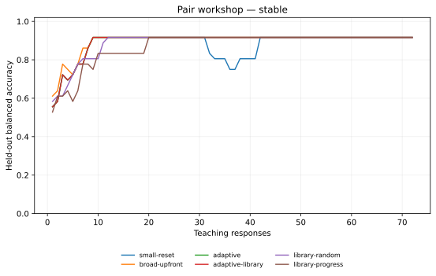
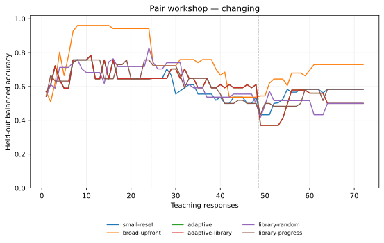
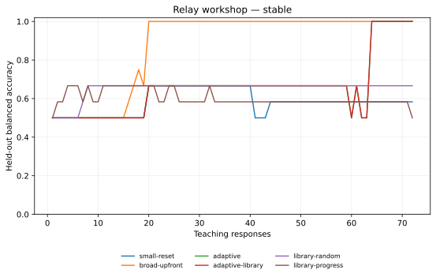
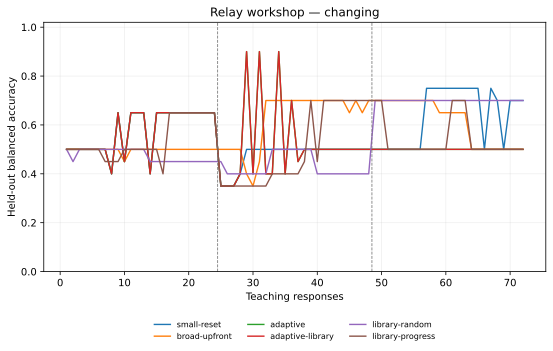

78 task runs; 5,616 teaching responses; 26 Python/Rust proof audits. Every final checkpoint reproduced predictions and its next question.
The learner constructs small rule programs from supplied building blocks. It does not invent an unrestricted language, acquire natural language, or update neural weights. This is a controlled comparison of existing research ideas.
| World | Task | Unseen evaluation |
|---|---|---|
| Mechanism | Conjunctions, alternatives, exactly-one conditions, and majority rules | Unqueried input combinations |
| Pair workshop | Different devices share a pattern involving contacts and matching attributes | New objects and larger scenes |
| Relay workshop | Signals pass through compatible connections; cycles and broken edges are present | Paths with 4–7 links, versus 1–3 during teaching |
Each curriculum contains one mechanism task, three pair tasks, and a relay task. Object names are random. The measurement schema is shared and versioned; new object names do not imply a new meaning for the measurements. Scenes and allowable tests are public; targets, clean labels, feedback noise, and change boundaries remain evaluator-owned. This is an API/data-flow boundary between trusted local components, not a security sandbox.
| Condition | Behavior |
|---|---|
| small-reset | Single-clause starting language; immediate Page–Hinkley resets |
| broad-upfront | Rich productions available immediately; bounded candidates refreshed directly from observed fit |
| adaptive | New programs compete with a reset and uncertainty on fresh feedback |
| adaptive-library | Adaptive growth plus persistent relational helpers |
| library-random | Same growth and library with random questions |
| library-progress | Same growth and library with loss-improvement-driven question groups |
The broad-upfront condition is a bounded search baseline, not exhaustive optimal search over every richer program. Its direct candidate admission and the adaptive fresh-response gate differ; comparisons assess these complete strategies. Information-seeking questions are used unless random/progress is specified.
Noise levels [0.1]; seeds [0]. The learner assumes 10% noise. Changing curricula switch mechanisms after responses [24, 48]. New explanations face 32 fresh responses. Improvement must exceed added program complexity plus 2.303 log-score units, and must improve raw prediction as well. This margin is a heuristic acceptance rule, not a calibrated significance test.
Accuracy is held-out balanced accuracy averaged over the teaching trajectory. Final accuracy averages the last 20 responses. Expected Brier scores include irreducible randomness in stochastic diagnostics. All methods pay for earlier curriculum lessons, including acquiring reusable concepts. Per-run records show cumulative label and search costs.
| World | Changes | Condition | Accuracy | Final | Brier | Growth/task | Used concepts | Budget stops |
|---|---|---|---|---|---|---|---|---|
| mechanism | no | adaptive | 0.567 | 0.600 | 0.088 | 0.00 | 0.00 | 0 |
| mechanism | no | adaptive-library | 0.567 | 0.600 | 0.088 | 0.00 | 0.00 | 0 |
| mechanism | no | broad-upfront | 0.566 | 0.600 | 0.089 | 0.00 | 0.00 | 0 |
| mechanism | no | library-progress | 0.689 | 0.600 | 0.069 | 0.00 | 0.00 | 0 |
| mechanism | no | library-random | 0.598 | 0.649 | 0.097 | 0.00 | 0.00 | 0 |
| mechanism | no | small-reset | 0.568 | 0.603 | 0.091 | 0.00 | 0.00 | 0 |
| mechanism | yes | adaptive | 0.515 | 0.552 | 0.366 | 0.00 | 0.00 | 0 |
| mechanism | yes | adaptive-library | 0.515 | 0.552 | 0.366 | 0.00 | 0.00 | 0 |
| mechanism | yes | broad-upfront | 0.725 | 0.755 | 0.246 | 0.00 | 0.00 | 0 |
| mechanism | yes | library-progress | 0.573 | 0.655 | 0.302 | 0.00 | 0.00 | 0 |
| mechanism | yes | library-random | 0.521 | 0.414 | 0.364 | 0.00 | 0.00 | 0 |
| mechanism | yes | small-reset | 0.586 | 0.750 | 0.326 | 0.00 | 0.00 | 0 |
| pair | no | adaptive | 0.894 | 0.917 | 0.097 | 0.00 | 0.00 | 0 |
| pair | no | adaptive-library | 0.894 | 0.917 | 0.097 | 0.00 | 0.00 | 0 |
| pair | no | broad-upfront | 0.898 | 0.917 | 0.061 | 0.00 | 0.00 | 0 |
| pair | no | library-progress | 0.873 | 0.917 | 0.111 | 0.00 | 0.00 | 0 |
| pair | no | library-random | 0.889 | 0.917 | 0.101 | 0.00 | 0.00 | 0 |
| pair | no | small-reset | 0.877 | 0.917 | 0.107 | 0.00 | 0.00 | 0 |
| pair | yes | adaptive | 0.598 | 0.517 | 0.220 | 0.00 | 0.00 | 0 |
| pair | yes | adaptive-library | 0.598 | 0.517 | 0.220 | 0.00 | 0.00 | 0 |
| pair | yes | broad-upfront | 0.745 | 0.702 | 0.176 | 0.00 | 0.00 | 0 |
| pair | yes | library-progress | 0.613 | 0.551 | 0.187 | 0.00 | 0.00 | 0 |
| pair | yes | library-random | 0.602 | 0.497 | 0.233 | 0.00 | 0.00 | 0 |
| pair | yes | small-reset | 0.599 | 0.574 | 0.188 | 0.00 | 0.00 | 0 |
| relay | no | adaptive | 0.657 | 0.792 | 0.325 | 1.00 | 0.00 | 0 |
| relay | no | adaptive-library | 0.657 | 0.792 | 0.325 | 1.00 | 0.00 | 0 |
| relay | no | broad-upfront | 0.877 | 1.000 | 0.109 | 0.00 | 0.00 | 0 |
| relay | no | library-progress | 0.602 | 0.579 | 0.361 | 0.00 | 0.00 | 0 |
| relay | no | library-random | 0.652 | 0.667 | 0.329 | 0.00 | 0.00 | 0 |
| relay | no | small-reset | 0.582 | 0.583 | 0.360 | 0.00 | 0.00 | 0 |
| relay | yes | adaptive | 0.531 | 0.500 | 0.180 | 0.00 | 0.00 | 0 |
| relay | yes | adaptive-library | 0.531 | 0.500 | 0.180 | 0.00 | 0.00 | 0 |
| relay | yes | broad-upfront | 0.579 | 0.597 | 0.164 | 0.00 | 0.00 | 0 |
| relay | yes | library-progress | 0.527 | 0.530 | 0.179 | 0.00 | 0.00 | 0 |
| relay | yes | library-random | 0.535 | 0.700 | 0.175 | 0.00 | 0.00 | 0 |
| relay | yes | small-reset | 0.564 | 0.665 | 0.154 | 0.00 | 0.00 | 0 |
Differences in mean trajectory balanced accuracy. Noise levels, seed repeats, and pair tasks are averaged within each curriculum; percentile bootstrap intervals resample curricula (2,000 draws). There are few independent curricula, especially after separating stable and changing cases. These are exploratory intervals.
| World | Changes | Comparison | Difference | 95% interval | Curricula |
|---|---|---|---|---|---|
| mechanism | False | adaptive minus small-reset | -0.0009 | [-0.0009, -0.0009] | 1 |
| mechanism | False | adaptive-library minus adaptive | +0.0000 | [+0.0000, +0.0000] | 1 |
| mechanism | False | library-progress minus adaptive-library | +0.1222 | [+0.1222, +0.1222] | 1 |
| mechanism | False | library-random minus adaptive-library | +0.0318 | [+0.0318, +0.0318] | 1 |
| mechanism | True | adaptive minus small-reset | -0.0716 | [-0.0716, -0.0716] | 1 |
| mechanism | True | adaptive-library minus adaptive | +0.0000 | [+0.0000, +0.0000] | 1 |
| mechanism | True | library-progress minus adaptive-library | +0.0582 | [+0.0582, +0.0582] | 1 |
| mechanism | True | library-random minus adaptive-library | +0.0068 | [+0.0068, +0.0068] | 1 |
| pair | False | adaptive minus small-reset | +0.0166 | [+0.0166, +0.0166] | 1 |
| pair | False | adaptive-library minus adaptive | +0.0000 | [+0.0000, +0.0000] | 1 |
| pair | False | library-progress minus adaptive-library | -0.0212 | [-0.0212, -0.0212] | 1 |
| pair | False | library-random minus adaptive-library | -0.0050 | [-0.0050, -0.0050] | 1 |
| pair | True | adaptive minus small-reset | -0.0009 | [-0.0009, -0.0009] | 1 |
| pair | True | adaptive-library minus adaptive | +0.0000 | [+0.0000, +0.0000] | 1 |
| pair | True | library-progress minus adaptive-library | +0.0156 | [+0.0156, +0.0156] | 1 |
| pair | True | library-random minus adaptive-library | +0.0040 | [+0.0040, +0.0040] | 1 |
| relay | False | adaptive minus small-reset | +0.0752 | [+0.0752, +0.0752] | 1 |
| relay | False | adaptive-library minus adaptive | +0.0000 | [+0.0000, +0.0000] | 1 |
| relay | False | library-progress minus adaptive-library | -0.0556 | [-0.0556, -0.0556] | 1 |
| relay | False | library-random minus adaptive-library | -0.0058 | [-0.0058, -0.0058] | 1 |
| relay | True | adaptive minus small-reset | -0.0326 | [-0.0326, -0.0326] | 1 |
| relay | True | adaptive-library minus adaptive | +0.0000 | [+0.0000, +0.0000] | 1 |
| relay | True | library-progress minus adaptive-library | -0.0042 | [-0.0042, -0.0042] | 1 |
| relay | True | library-random minus adaptive-library | +0.0042 | [+0.0042, +0.0042] | 1 |
A helper is accepted only if it occurs at least three times across two tasks and reduces corpus description size after paying for its definition. That is a semantics-preserving shortcut relative to the source programs; it does not establish that those programs describe reality. Definitions are immutable and versioned. Later prediction performance tests whether the shortcut is useful. Concept counts alone are not a success metric.
No helper met the acceptance conditions in this run. This is an experimental outcome, not evidence of successful concept discovery.
out :- b0_1, b1_0, b4_0.
Conditional prediction: False; candidate mass 0.400. The full source-fact dictionary and Rust proof are in explanations.jsonl.
out :- b0_1, b1_0, b4_0.
Conditional prediction: False; candidate mass 0.400. The full source-fact dictionary and Rust proof are in explanations.jsonl.
out(X,Y) :- edge(X,Y), u(X).
Conditional prediction: True; candidate mass 0.500. The full source-fact dictionary and Rust proof are in explanations.jsonl.
out(X,Y) :- edge(X,Y), u(X).
Conditional prediction: True; candidate mass 0.500. The full source-fact dictionary and Rust proof are in explanations.jsonl.
out(X,Y) :- edge(X,Y), u(Y).
Conditional prediction: False; candidate mass 0.500. The full source-fact dictionary and Rust proof are in explanations.jsonl.
out(X,Y) :- edge(X,Y), u(Y).
Conditional prediction: True; candidate mass 0.500. The full source-fact dictionary and Rust proof are in explanations.jsonl.






Coin outputs are independent random events. Distraction mixes random outputs with a learnable rule. Unsupported four-bit parity needs eight conjunction clauses, beyond the four-clause bound. These controls expose confidence errors, unnecessary growth, and a representational ceiling. They are excluded from primary comparisons.
| Diagnostic | Condition | Accuracy | Brier | Confidence coverage | Growth/task | Uncertainty/task |
|---|---|---|---|---|---|---|
| coin | adaptive | 0.500 | 0.446 | 0.779 | 0.00 | 1.00 |
| coin | adaptive-library | 0.500 | 0.446 | 0.779 | 0.00 | 1.00 |
| coin | broad-upfront | 0.500 | 0.410 | 0.605 | 0.00 | 0.00 |
| coin | library-progress | 0.500 | 0.385 | 0.490 | 0.00 | 1.00 |
| coin | library-random | 0.500 | 0.330 | 0.192 | 0.00 | 1.00 |
| coin | small-reset | 0.500 | 0.441 | 0.752 | 0.00 | 0.00 |
| distraction | adaptive | 0.671 | 0.263 | 0.698 | 0.00 | 1.00 |
| distraction | adaptive-library | 0.671 | 0.263 | 0.698 | 0.00 | 1.00 |
| distraction | broad-upfront | 0.667 | 0.269 | 0.697 | 0.00 | 0.00 |
| distraction | library-progress | 0.674 | 0.283 | 0.769 | 0.00 | 0.00 |
| distraction | library-random | 0.676 | 0.262 | 0.730 | 0.00 | 1.00 |
| distraction | small-reset | 0.681 | 0.275 | 0.758 | 0.00 | 0.00 |
| unsupported | adaptive | 0.412 | 0.532 | 0.697 | 0.00 | 0.00 |
| unsupported | adaptive-library | 0.412 | 0.532 | 0.697 | 0.00 | 0.00 |
| unsupported | broad-upfront | 0.434 | 0.465 | 0.601 | 0.00 | 0.00 |
| unsupported | library-progress | 0.419 | 0.492 | 0.497 | 0.00 | 1.00 |
| unsupported | library-random | 0.439 | 0.438 | 0.457 | 0.00 | 1.00 |
| unsupported | small-reset | 0.400 | 0.547 | 0.707 | 0.00 | 0.00 |
Teaching/evaluation loop: 16.3s wall, 16.0s controller CPU; peak controller RSS 87.4 MiB. CPU/RSS exclude native proof child processes. Timings include storage, checkpoint verification, and evaluation; search context counters separately charge candidate predictions on public training scenes. No energy sensor is available.
Reproduce with python -m research_lab discovery run --config config.json --output NEW_DIRECTORY.
config.json · summary.json · summary.csv · runs.jsonl · trace.jsonl.gz · events.jsonl.gz · concepts.jsonl · explanations.jsonl · research.json · worlds.json.gz · memory.sqlite · manifest.json
Generated from verified raw measurements with Matplotlib 3.10.7.
curve-mechanism-stable.svg · curve-mechanism-stable.png · curve-mechanism-changing.svg · curve-mechanism-changing.png · curve-pair-stable.svg · curve-pair-stable.png · curve-pair-changing.svg · curve-pair-changing.png · curve-relay-stable.svg · curve-relay-stable.png · curve-relay-changing.svg · curve-relay-changing.png · paired-comparisons.svg · paired-comparisons.png